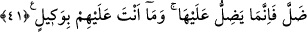
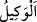

Bu ifâdenin anlamı, şöyledir: Kendisini rüsvay edecek azâbın geleceği kimseyi hemen
bileceksiniz. Bu azab, dünya azâbıdır. Düşmanlarının rezil olması, O’nun galip
geleceğine delildir. Çünkü Allah düşmanlarını Bedir savaşında azaba uğratıp rezil
ederek O’nu zafere ulaştırmıştır. Hak Sübhânehû ve Teâlâ Onun düşmanlarını Bedir
günü rüsvay etti. Onlardan bir kısmı müminler eliyle öldürüldü. Bir kısmı da zelil olup
belâya dûçâr oldular.
Bir kısmı başını kaptırmış bir kısmının da elleri bağlı.
“Kime” yaptıklarından dolayı “sürekli” ebediyyen ondan ayrılmayan, devamlı ve hiç
inkıtâa uğramayan “azap inecek?” Bu azab ise âhiret azâbıdır. Yâni siz bâtıl üzere
bulunmanız sebebiyle helâk olacaksınız. Biz ise hak üzere bulunmamız sebebiyle
kurtulacağız. Yakında bizim kâr, sizin ise zarar ettiğiniz ortaya çıkacak. Bizim
fazlalığımız sizin eksikliğiniz yakında belli olacak. Yakında Allah sizi çağırıp hesaba
çekecek, ama sizin verecek cevabınız olmayacak. Size azâb edecek, ama size şefâat
edecek kimse olmayacak. Sizi yok edecek, ama sesinize kulak veren bile olmayacak!
İman feryada ulaşır, Kur’ân da imdada.
41. (Rasûlüm)! Şüphesiz biz bu Kitab’ı sana, insanlar için hak olarak indirdik.
Artık kim doğru yolu seçerse kendi lehinedir; kim de saparsa ancak kendi aleyhine
sapmış olur. Sen onların üzerinde vekil değilsin.
“(Rasûlüm)! Şüphesiz biz bu Kitab’ı” yâni Kur’ân’ı “sana, insanlar için hak olarak”
onu sana indirmekte haklı olduğumuz bir halde veya hak ve doğruluk taşıyan bir kitap
olarak “indirdik.” Yâni onda bulunan her bir ifâde haktır, doğrudur, kendisinde hiçbir
kuşku bulunmamaktadır, dolayısı ile de onun gereğince amel etmek, kesin olarak
gereklidir.
Kur’an insanlar için indirilmiştir, çünkü onun indirilişi onların dünya ve âhiret
maslahatlarını temin etmek içindir.
“Artık kim” Kur’an’da bulunanlarla amel etmek sûretiyle “doğru yolu seçerse kendi
lehinedir;” yâni böyle yaparak ancak kendisine fayda vermiş olur. “Kim de” onun
gereğince amel etmeyerek “saparsa” dalâletinin vebâli kendisi ile sınırlı olduğu için
“ancak kendi aleyhine sapmış olur. Sen onların üzerinde vekil değilsin.” Yâni sen
müşrikleri zorla hidayete çekmekle görevlendirilmedin. Senin vazifen ancak tebliğ
etmektir. Sen zâten bu tebliğ işini en güzel şekilde yaptın.
“
” bir işi tamamlayana kadar onun başında duran demektir. Âyette işâret vardır ki
Kur’ân, Allah’ı ve O’nun yakın olduğunu unutan insanlara Allah’ın yakınlığını
hatırlatmaktadır. Kim onun öğüt ve hatırlatmasına kulak verir, onun gösterdiği doğru
yolu bulabilirse, doğru yolu bulmasının (hidâyet) bütün faydaları kendisinedir. Çünkü